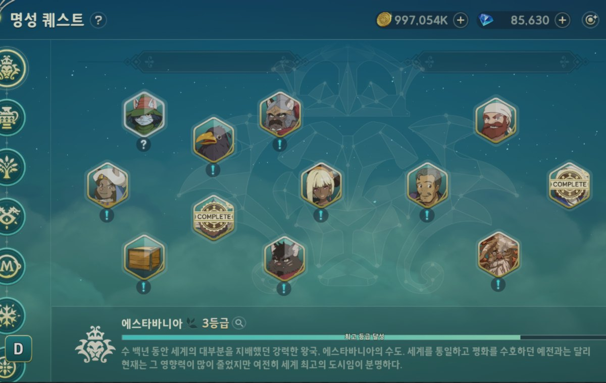
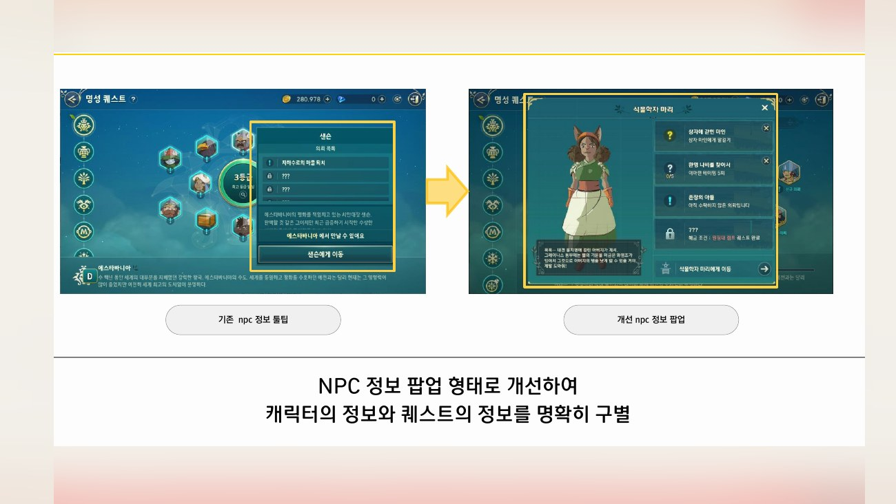
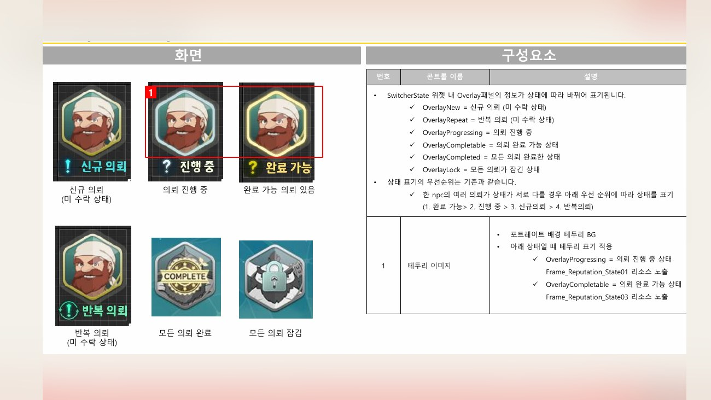
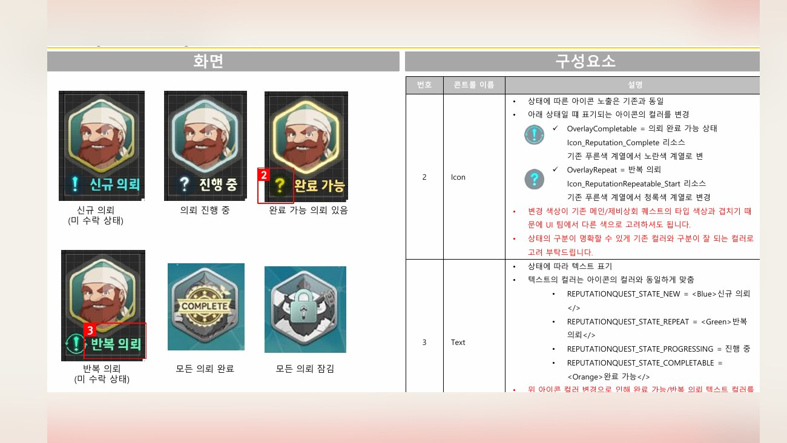
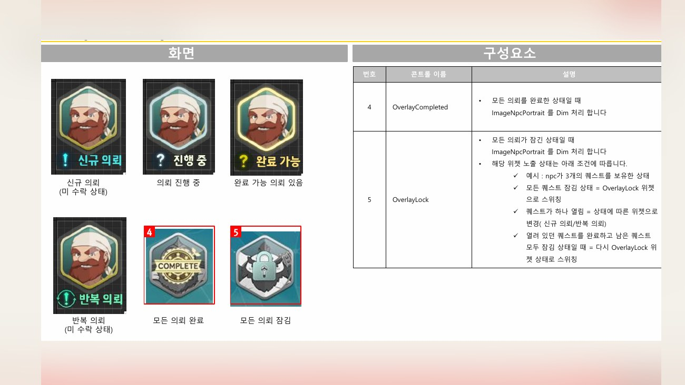
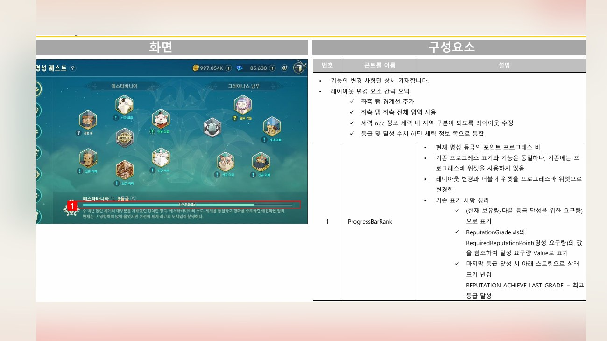

Planning Context
어떤 기획이었나
- 명성 시스템은 세력, NPC, 퀘스트, 잠금 조건, 추천 동선이 함께 얽혀 있어 유저가 다음 행동을 놓치기 쉽습니다.
- 퀘스트와 세력 상태를 화면별로 나눠 보여주면 전체 진행 구조와 보상/해금 목적이 약해질 수 있습니다.
ProjectN · Reputation UX
명성 시스템의 세력 현황, NPC 상세, 퀘스트 안내와 잠금 조건을 유저가 이해할 수 있도록 정리한 시스템 UX 사례입니다.

Planning Context
Process
Deliverables
Result
명성 시스템의 진행 조건과 세력/NPC/퀘스트 정보를 연결해 유저가 다음 목표를 파악하기 쉬운 구조로 정리했습니다.
Deliverable Captures
원본 문서는 포함하지 않고, 포트폴리오 확인용으로 일부 페이지만 이미지화했습니다. 슬라이드 마스터/상하단 영역은 흐림 처리했습니다.




